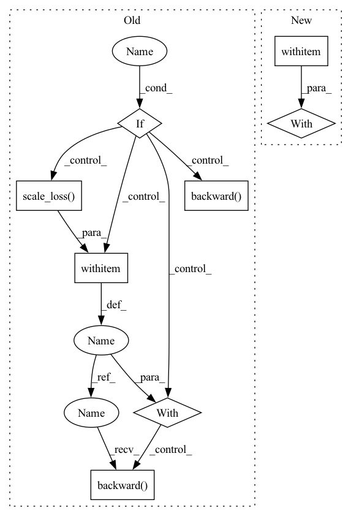

Pattern ID :16175

Before Change
loss = outputs["total_loss"]
self.optimizer.zero_grad()
if self.amp_training:
with amp.scale_loss(loss, self.optimizer) as scaled_loss:
scaled_loss.backward()
else:
loss.backward()
self.optimizer.step()
if self.use_model_ema:
self.ema_model.update(self.model)
After Change
inps, targets = self.exp.preprocess(inps, targets, self.input_size)
data_end_time = time.time()
with torch.cuda.amp.autocast(enabled=self.amp_training):
outputs = self.model(inps, targets)
loss = outputs["total_loss"]
In pattern: SUPERPATTERN
Frequency: 3
Non-data size: 8
Instances
Fragment ID: 54080893
Project Name: megvii-basedetection/yolox
Commit Name: c9fe0aae2db90adccc90f7e5a16f044bf110c816
Time: 2021-08-19
Author: ruinmessi@gmail.com
File Name: yolox/core/trainer.py
M Class Name: Trainer
N Class Name: Trainer
M Method Name: train_one_iter(1)
N Method Name: train_one_iter(1)
M Parent Class:
N Parent Class:
M File Name: yolox/core/trainer.py
N File Name: yolox/core/trainer.py
M Start Line: 99
M End Line: 108
N Start Line: 94
N End Line: 108
'>
Before Change
else:
loss, stats = criterion(outputs, labels)
if is_mixed_precision:
// 2/3 & 3/3 of mixed precision training with amp
with amp.scale_loss(loss, optimizer) as scaled_loss:
scaled_loss.backward()
else:
loss.backward()
optimizer.step()
lr_scheduler.step()
// Logging
After Change
inputs = inputs.to(device)
labels = labels.to(device)
optimizer.zero_grad()
with autocast(is_mixed_precision):
outputs = net(inputs)["out"]
outputs = torch.nn.functional.interpolate(outputs, size=input_sizes[0], mode="bilinear", align_corners=True)
conf_mat.update(labels.flatten(), outputs.argmax(1).flatten())
'>
Fragment ID: 54080894
Project Name: voldemortx/dst-cbc
Commit Name: 6011a78ca028c58259d0181a11905e1d258ff7b9
Time: 2021-06-06
Author: zyfeng97@outlook.com
File Name: segmentation/main.py
M Class Name: AnonimousClass
N Class Name: AnonimousClass
M Method Name: train(19)
N Method Name: train(19)
M Parent Class:
N Parent Class:
M File Name: segmentation/main.py
N File Name: segmentation/main.py
M Start Line: 205
M End Line: 220
N Start Line: 173
N End Line: 227
'>
Before Change
loss = outputs["total_loss"]
self.optimizer.zero_grad()
if self.amp_training:
with amp.scale_loss(loss, self.optimizer) as scaled_loss:
scaled_loss.backward()
else:
loss.backward()
self.optimizer.step()
if self.use_model_ema:
self.ema_model.update(self.model)
After Change
targets.requires_grad = False
data_end_time = time.time()
with torch.cuda.amp.autocast(enabled=self.amp_training):
outputs = self.model(inps, targets)
loss = outputs["total_loss"]
self.optimizer.zero_grad()
'>
Fragment ID: 54080897
Project Name: ifzhang/bytetrack
Commit Name: 6f8e09ade5b1d0324b75b7e151de4db4a44ca189
Time: 2021-09-14
Author: 953260160@qq.com
File Name: yolox/core/trainer.py
M Class Name: Trainer
N Class Name: Trainer
M Method Name: train_one_iter(1)
N Method Name: train_one_iter(1)
M Parent Class:
N Parent Class:
M File Name: yolox/core/trainer.py
N File Name: yolox/core/trainer.py
M Start Line: 98
M End Line: 107
N Start Line: 99
N End Line: 106